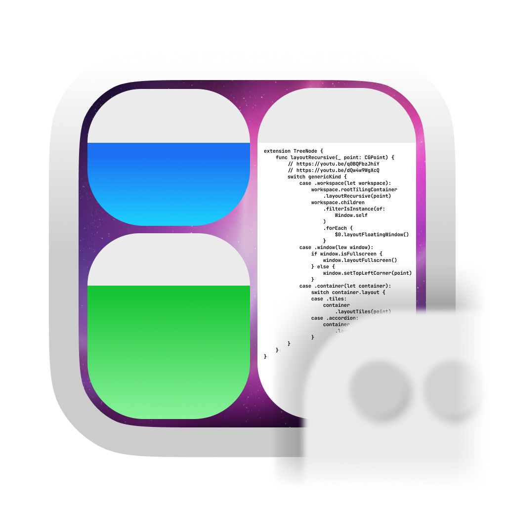

AeroSpace is an i3-like tiling window manager for macOS
Project homepage: https://github.com/nikitabobko/AeroSpace

1. Installation
1.1. Homebrew installation (Preferred)
Homebrew is a package manager for macOS
brew install --cask nikitabobko/tap/aerospace1.2. Manual installation
-
Download the latest available zip from releases page
-
Unpack zip
-
Put unpacked
AeroSpace-v$VERSION/AeroSpace.appto/Applications -
Put unpacked
AeroSpace-v$VERSION/bin/aerospaceanywhere to$PATH(The step is optional. It is only needed if you want to be able to interact with AeroSpace from CLI)
If you see this message
"AeroSpace.app" can't be opened because Apple cannot check it for malicious software.
Option 1 to resolve the problem
xattr -d com.apple.quarantine /Applications/AeroSpace.appOption 2 to resolve the problem
-
navigate in Finder to
/Applications/AeroSpace.app -
Right mouse click
-
Open (yes, it’s that stupid)
2. Configuring AeroSpace
2.1. Config location
AeroSpace tries to find the config in two locations:
-
~/.aerospace.toml -
${XDG_CONFIG_HOME}/aerospace/aerospace.toml(XDG_CONFIG_HOMEfallbacks to~/.config, if not presented)
If the config is found in more than one location then the ambiguity is reported.
2.2. Config samples
Please see the following config samples:
-
The default config: default-config.toml
-
i3 like config: i3-like-config-example.toml
-
Search for configs by other users on GitHub for inspiration
The default-config.toml also serves as a documentation, since it contains all possible plain configuration keys with comments. Non-trivial configuration options are mentioned further in this guide.
AeroSpace uses TOML format for the config. TOML is easy to read, and it supports comments. See TOML spec for more info
2.3. Binding modes
You can create multiple sets of bindings by creating different binding modes. When you switch to a different binding mode, all the bindings from the current mode are deactivated, and only the bindings specified in the new mode become active. The initial binding mode that AeroSpace starts out with is "main".
This feature is absolutely identical to the one in i3
Working with binding modes consists of two parts: 1. defining a binding to switch to the binding mode and 2. declaring the binding mode itself.
[mode.main.binding] # Declare 'main' binding mode
alt-r = 'mode resize' # 1. Define a binding to switch to 'resize' mode
[mode.resize.binding] # 2. Declare 'resize' binding mode
minus = 'resize smart -50'
equal = 'resize smart +50'2.4. Commands
Commands is the thing that you use to manipulate AeroSpace and query its state.
There are two ways on how you can use commands:
-
Bind keys to run AeroSpace commands. Example:
[mode.main.binding] # Bind alt-1 key to switch to workspace 1 alt-1 = 'workspace 1' # Or bind a sequence of commands alt-shift-1 = ['move-node-to-workspace 1', 'workspace 1'] -
Run commands in CLI. Open up a Terminal.app and type:
aerospace workspace 1
For the list of available commands see: commands
2.5. Keyboard layouts and key mapping
By default, key bindings in the config are perceived as qwerty layout.
If you use different layout, different alphabet, or you just want to have a fancy alias for the existing key, you can use key-mapping.key-notation-to-key-code.
# Define my fancy unicorn key notation
[key-mapping.key-notation-to-key-code]
unicorn = 'u'
[mode.main.binding]
alt-unicorn = 'workspace unicorn' # (⁀ᗢ⁀)-
For
dvorakusers, AeroSpace offers a preconfigured preset.key-mapping.preset = 'dvorak' -
For
colemakusers, there is a compiled mapping.colemakmay be added as preconfigured preset similar todvorakin the future, if there is enough demand
2.6. exec-* Environment Variables
You can configure environment variables of exec-* commands and callbacks (such as exec-and-forget, 'exec-on-workspace-change' callback)
-
exec.inherit-env-vars = trueconfigures whether inherit environment variables ofAeroSpace.appor not. (The default istrue) -
You can override env variables with the following syntax:
[exec.env-vars] PATH = '${HOME}/bin:${PATH}'Environment variable substitution is supported in form of
${ENV_VAR} -
If not overridden,
default-config.tomladds Homebrew to$PATH/opt/homebrew/bin:/opt/homebrew/sbin:${PATH}. See the problem statement: https://docs.brew.sh/FAQ#my-mac-apps-dont-find-homebrew-utilities -
You can inspect what is the end result of environment variables using
list-exec-env-varscommand
3. Tree
AeroSpace stores all windows and containers in a tree. AeroSpace tree tiling model is inspired by i3.
Definition. Each non-leaf node is called a "Container"
|
Warning
|
i3 has a different terminology. "container" in i3 is the same as "node" in AeroSpace. |
-
Each workspace contains its own single root node
-
Each container can contain arbitrary number of children nodes
-
Windows are the only possible leaf nodes. Windows contain zero children nodes
-
Every container has two properties:
-
Layout (Possible values:
tiles,accordion) -
Orientation (Possible values:
horizontal,vertical)
-
When we say "layout of the window", we refer to the layout of the window’s parent container.
It’s easier to understand tree tiling model by looking at examples

You can nest containers as deeply as you want to.
You can navigate in the tree in 4 possible cardinal directions (left, down, up, right). You use focus command to do that.
The tree structure can be changed with three commands:
3.1. Layouts
In total, AeroSpace provides 4 possible layouts:
-
h_tileshorizontal tiles (in i3, it’s called "horizontal split") -
v_tilesvertical tiles (in i3, it’s called "vertical split") -
h_accordionhorizontal accordion (analog of i3’s "tabbed layout") -
v_accordionvertical accordion (analog of i3’s "stacked layout")
From the previous section, you’re already familiar with the tiles layout.
Accordion is a layout where windows are placed on top of each other.
-
The horizontal accordion shows left and right paddings to visually indicate the presence of other windows in those directions.
-
The vertical accordion shows top and bottom paddings to visually indicate the presence of other windows in those directions.


Just like in a tiles layout, you can use the focus command to navigate an accordion layout.
You can navigate the windows in an h_accordion by using the focus (left|right) command.
While in a v_accordion, you can navigate the windows using the focus (up|down) command.
Accordion padding is configurable via accordion-padding option (see default-config.toml)
3.2. Normalization
By default, AeroSpace does two types of tree normalizations:
-
Containers that have only one child are "flattened". The root container is an exception, it is allowed to have a single window child. Configured by
enable-normalization-flatten-containers -
Containers that nest into each other must have opposite orientations. Configured by
enable-normalization-opposite-orientation-for-nested-containers
Example 1
According to the first normalization, such layout isn’t possible:
h_tiles (root node)
└── v_tiles
└── window 1
it will be immediately transformed into
v_tiles (new root node) └── window 1
Example 2
According to the second normalization, such layout isn’t possible:
h_tiles
├── window 1
└── h_tiles
├── window 2
└── window 3
it will be immediately transformed into
h_tiles
├── window 1
└── v_tiles
├── window 2
└── window 3
Normalizations make it easier to understand the tree structure by looking at how windows are placed on the screen.
You can disable normalizations by placing these lines to your config:
enable-normalization-flatten-containers = false
enable-normalization-opposite-orientation-for-nested-containers = false3.3. Floating windows
Normally, floating windows are not considered to be part of the tiling tree. But it’s not the case with focus command.
From focus command perspective, floating windows are part of tiling tree. The floating window parent container is determined as the smallest tiling container that contains the center of the floating window.
This technique eliminates the need for an additional binding for focusing floating windows.
4. Emulation of virtual workspaces
Native macOS Spaces have a lot of problems
-
The animation for Spaces switching is slow
-
You can’t disable animation for Spaces switching (you can only make it slightly faster by turning on
Reduce motionsetting, but it’s suboptimal)
-
-
You have a limit of Spaces (up to 16 Spaces with one monitor)
-
You can’t create/delete/reorder Space and move windows between Spaces with hotkeys (you can only switch between Spaces with hotkeys)
-
Apple doesn’t provide public API to communicate with Spaces (create/delete/reorder/switch Space and move windows between Spaces)
Since Spaces are so hard to deal with, AeroSpace reimplements Spaces and calls them "Workspaces".
The idea is that if the workspace isn’t active then all of its windows are placed outside the visible area of the screen, in the bottom right corner.
Once you switch back to the workspace, (e.g. by the means of workspace command, or cmd + tab) windows are placed back to the visible area of the screen.
When you quit the AeroSpace or when the AeroSpace is about to crash, AeroSpace will place all windows back to the visible area of the screen.
AeroSpace shows the name of currently active workspace in its tray icon (top right corner), to give users a visual feedback on what workspace is currently active.
|
Note
|
For better or worse, macOS doesn’t allow to place windows outside the visible area entirely. You will still be able to see a few pixels of "hidden" windows in the bottom right corner of your screen. That means, that if AeroSpace crashes badly you will still be able to manually "unhide" the windows by dragging these few pixels to the center of the screen. |
The intended workflow of using AeroSpace workspaces is to only have one macOS Space (or as many monitors you have, if Displays have separate Spaces is enabled) and don’t interact with macOS Spaces anymore.
4.1. A note on mission control
For some reason, mission control doesn’t like that AeroSpace puts a lot of windows in the bottom right corner of the screen. Mission control shows windows too small even if it has enough space to show them bigger.
To workaround, you can enable System Settings → Desktop & Dock → Group windows by application setting.
For some weird reason, it helps.
4.2. A note on ‘Displays have separate Spaces’
AeroSpace doesn’t care about System Settings → Desktop & Dock → Displays have separate Spaces setting.
It works equally good whether this option is enabled or disabled.
Overview of ‘Displays have separate Spaces’
| ‘Displays have separate Spaces’ is enabled | ‘Displays have separate Spaces’ is disabled | |
|---|---|---|
When the first monitor is in fullscreen |
👍 Second monitor operates independently |
😡 Second monitor is unusable black screen |
Is it possible for window to span across several monitors? |
😡 No |
👍 Yes |
macOS status bar … |
… is displayed on both monitors |
… is displayed only on main monitor |
5. Callbacks
5.1. 'on-window-detected' callback
You can use on-window-detected callback to run commands every time a new window is detected.
Here is a showcase example that uses all the possible configurations:
[[on-window-detected]]
if.app-id = 'com.apple.systempreferences' # Application ID exact match
if.app-name-regex-substring = 'settings' # Case insensetive regex substring
if.window-title-regex-substring = 'substring' # Case insensetive regex substring
if.during-aerospace-startup = true # Run the callback only if the window detected during AeroSpace startup
check-further-callbacks = true # Check further callbacks. If not specified, the default value is false
run = ['layout floating', 'move-node-to-workspace S'] # The callback itselfrun commands are run only if the detected window matches all the specified conditions.
If no conditions are specified then run is run every time a new window is detected.
Several callbacks can be declared in the config.
The callbacks are processed in the order they are declared.
By default, the first callback that matches the criteria is run, and further callbacks are not considered.
(The behavior can be overridden with check-further-callbacks option)
For now, only move-node-to-workspace and layout commands are supported in the run callback.
Please post your use cases to the issue if you want other commands to get supported.
Available window conditions are:
| Condition TOML key | Condition description |
|---|---|
|
Application ID exact match of the detected window |
|
Application name case insensitive regex substring of the detected window |
|
Window title case insensitive regex substring of the detected window |
|
|
-
if.during-aerospace-startup = trueis useful if you want to do the initial app arrangement only on startup. -
if.during-aerospace-startup = falseis useful if you want to relaunch AeroSpace, but the callback has side effects that you don’t want to run on every relaunch. (e.g. the callback opens new windows)
There are several ways to know app-id:
-
Take a look at precomposed list of popular application IDs
-
You can use
aerospace list-appsCLI command to get IDs of running applications -
mdls -name kMDItemCFBundleIdentifier -r /Applications/App.app
|
Important
|
Some windows initialize their title after the window appears.
window-title-regex-substring may not work as expected for such windows
|
Examples of automations:
-
Assign apps on particular workspaces
[[on-window-detected]] if.app-id = 'org.alacritty' run = 'move-node-to-workspace T' # mnemonics T - Terminal [[on-window-detected]] if.app-id = 'com.google.Chrome' run = 'move-node-to-workspace W' # mnemonics W - Web browser [[on-window-detected]] if.app-id = 'com.jetbrains.intellij' run = 'move-node-to-workspace I' # mnemonics I - IDE -
Make all windows float by default
[[on-window-detected]] check-further-callbacks = true run = 'layout floating'
5.2. 'exec-on-workspace-change' callback
exec-on-workspace-change callback allows to run arbitrary process when workspace changes.
It may be useful for integrating with bars.
# Notify Sketchybar about workspace change
exec-on-workspace-change = ['/bin/bash', '-c',
'/opt/homebrew/opt/sketchybar/bin/sketchybar --trigger aerospace_workspace_change FOCUSED=$AEROSPACE_FOCUSED_WORKSPACE'
]Besides the exec.env-vars, the process has access to the following environment variables:
-
AEROSPACE_FOCUSED_WORKSPACE- the workspace user switched to -
AEROSPACE_PREV_WORKSPACE- the workspace user switched from
For a more elaborate example on how to integrate with Sketchybar see goodness
6. Multiple monitors
-
The pool of workspaces is shared between monitors
-
Each monitor shows its own workspace. The showed workspaces are called"visible" workspaces
-
Different monitors can’t show the same workspace at the same time
-
Each workspace (even invisible, even empty) has a monitor assigned to it
-
By default, all workspaces are assigned to the "main" monitor ("main" as in
System → Displays → Use as)
When you switch to a workspace:
-
AeroSpace takes the assigned monitor of the workspace and makes the workspace visible on the monitor
-
AeroSpace focuses the workspace
You can move workspace to a different monitor with move-workspace-to-monitor command.
The idea of making pool of workspaces shared is based on the observation that most users have a limited set of workspaces on their secondary monitors. Secondary monitors are frequently dedicated to specific tasks (browser, shell), or for monitoring various activities such as logs and dashboards. Thus, using one workspace per each secondary monitors and "the rest" on the main monitor often makes sense.
|
Note
|
The only difference between AeroSpace and i3 is switching to empty workspaces. When you switch to an empty workspace, AeroSpace puts the workspace on an assigned monitor; i3 puts the workspace on currently active monitor.
|
6.1. Assign workspaces to monitors
You can use workspace-to-monitor-force-assignment syntax to assign
workspaces to always appear on particular monitors
[workspace-to-monitor-force-assignment]
1 = 1 # Monitor sequence number from left to right. 1-based indexing
2 = 'main' # Main monitor
3 = 'secondary' # Non-main monitor in case when there are only two monitors
4 = 'built-in' # Case insensitive regex substring
5 = '^built-in retina display$' # Case insensitive regex match
6 = ['secondary', 'dell'] # You can specify multiple patterns. The first matching pattern will be used-
Left hand side of the assignment is the workspace name
-
Right hand side of the assignment is the monitor pattern
Supported monitor patterns:
-
main- "Main" monitor ("main" as inSystem Settings → Displays → Use as) -
secondary- Non-main monitor in case when there are only two monitors -
<number>(e.g.1,2) - Sequence number of the monitor from left to right. 1-based indexing -
<regex-pattern>(e.g.dell.*,built-in.*) - Case insensitive regex substring pattern
You can specify multiple patterns as an array. The first matching pattern will be used
move-workspace-to-monitor command has no effect for workspaces that have monitor assignment
7. Caveats
7.1. Dialog heuristics
-
Apple provides accessibility API for apps to let others know which of their windows are dialogs
-
A lot of apps don’t implement this API or implement it improperly
Even some Apple dialogs don’t implement the API properly. (E.g. Finder "Copy" progress window doesn’t let others know that it’s a dialog)
AeroSpace uses the API to gently ask windows whether they are dialogs, but AeroSpace also applies some heuristics.
For example, windows without a fullscreen button (NB! fullscreen button and maximize button are different buttons) are considered dialogs, excluding terminal apps (WezTerm, Alacritty, iTerm2).
Windows that are recognized as dialogs are floated by default.
It’s not possible to disable the heuristics, because the goal is to make the heuristics so good that there won’t problems with them. If you find that some windows are not handled properly please report an issue
Anyway, your alternatives are:
-
Force tile all the windows (or windows of a particular app)
[[on-window-detected]] check-further-callbacks = true run = 'layout tiling' -
Force float all the windows (or windows of a particular app)
[[on-window-detected]] check-further-callbacks = true run = 'layout floating'